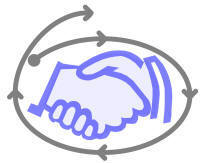

|

|
I have been searching for a symbol that signifies trust
relationships as they apply to trustworthiness in software. I
settled on a simple symbol consisting of a cyclic geometric shape around
the image of a handshake. It became very difficult to hold onto my
vision of what TROST and the TROSTing idea supply until I found a single symbol that gave
voice to my concerns and interests in championing open-system
trustworthiness.
I confess that the symbol also confronts me with all of the ways that
I am unreliable and careless in managing my commitments. There's a
chasm for me to cross and this project brings up every gap as I'm
tempted to deflect trustworthiness to something technical and away from
how slippery I be at making. managing, and keeping promises.
The symbol is a keeper. The important work remains.
|
— Dennis E. Hamilton
Seattle, Washington
2005 July 20
The symbol is a fusion of several elements:
- Existence of a trust relationship and building of trustworthiness
is symbolized by the handshake.
- The management of commitments
via conversations for action is represented by the four stages
around the ellipse. This underscores the collaborative nature
of complex coordinated efforts such as development of software systems.
- The Shewhart-Deming cycle of
learning and improvement, part of practically every
software-development process model, is also signified in the ellipse. That
represents for me the engagement of producers and adopters in the
development of products, and the trust that leads to powerful engagement and
partnership.
- The outward spiraling is indicative of the progression of
deliverables, accomplishment, and learning, with building of trust over
time. It reflects the current interest in agile development, early
experience, and the cooperative/collaborative introduction of technology
that supports what people are up to. For me it also signifies the
unending work of committed participants to develop their self-trust,
confidence and willingness to fail in expanding their capacities and
competencies for big undertakings.
It's the courageous leap into what we don't know and can't predict and where
innovations and breakthroughs occur.
It has become clear in exploring ideas of trust that trustworthiness in
artifacts is not about the artifact. Software is not trustworthy.
It's just software. The hardware is just hardware. The computer system
doesn't care and has no volition in the matter of our relying on it. Where
we see trustworthiness in software is in evoking the producer's caring, by
design, for our purposes and success. (It's that attention and care that I
speak of as TROSTing.) Trustworthiness is affirmed
in the ways the producer steps in to resolve breakdowns that we may encounter (a
reminder I'm grateful to Hal
Macomber for).
We do not negotiate with the computer when there is a breakdown, even though
there may be support for resolution of problems incorporated in the software.
Ultimately we resort to the producer of the product, not the
artifact, for resolving the breakdown. We rely on others, whether for
rescue or remedy. Even when we say "Word lost
my document," we really mean that Microsoft exposed us to that risk in how
the artifact is designed to work. The next time some software or
computer-related service isn't working for you, listen for who you hold
responsible. Is it really the program? Or is it how you feel
carelessly dealt with by some anonymous (though named) party?
The symbol of trust says, for me, how I as a producer (of words or software
or any other fulfillment of a commitment) am called to be careful—full of care—and have the
courage to trust myself and those I deal with in my being trustworthy for them.
The source materials and analysis that led to the symbol is provided in further pages of this InfoNote:
- i050601b: Symbols of Trust (latest)
- i050601c: Symbols of Trust 0.12 (first
stable version)
- i050601a: The job jar and diary of work
items for developing and applying the symbol on TROSTing.org.
- See also:
- Orcmid's Lair:
Symbols of
Trust (2005-07-20)
- Revision History:
- 0.15 2005-07-21-00:09 Retrofit some improvements
- The blog post has some improved wordings. Replicate them here.
And link to the blog post.
- 0.14 2005-07-20-18:00 Get it Done
- There are still mistakes, and I see that I was not being clear in the
confronting parts. I also want to acknowledge Hal Macomber for reminding
me that it is in the face of breakdowns that trustworthiness is tested and
endures or falls. It is in the breach that the trustworthy are known.
Do a quick geometry fix.
- 0.13 2005-07-20-14:53 Expand and Clarify
- The layout is improved and the larger image is employed. This text is
the basis for a blog page announcing this work.
- 0.12 2005-07-20-02:33 Identify the available content
- Indicate what is here and the symbol that has been designed, tying in the
Symbol of Trust 0.12 account.
- 0.00 2005-06-23-23:16 create bootstrap placeholder to morph
into the necessary material
- Incorporate job jar and use it to drive the
completion of essential items here, providing an initial skeleton for more
content. This page is a customization of the
InfoNote
Bootstrap Template 0.10 template. A
version from
Develop
InfoNote Bootstrap Template (0.10) Material was used.
|

|
|
created 2005-06-23-23:16 -0700 (pdt) by
orcmid
$$Author: Orcmid $
$$Date: 17-06-30 12:04 $
$$Revision: 64 $
|